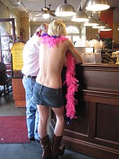

Mardi Gras refers to events of the Carnival celebration, beginning on or after the Christian feasts of
the Epiphany (Three Kings Day) and culminating on the day before Ash Wednesday, which is known as Shrove
Tuesday. Mardi
Gras is French for "Fat Tuesday", reflecting the practice of the last night of eating rich, fatty foods
before the
ritual Lenten sacrifices and fasting of the Lenten season.
Related popular practices are associated with Shrovetide celebrations before the fasting and religious
obligations
associated with the penitential season of Lent. In countries such as the United Kingdom, Mardi Gras is more
usually
known as Pancake Day or (traditionally) Shrove Tuesday (derived from the word shrive, meaning "to administer
the
sacrament of confession to; to absolve").

LaToya Cantrell (born April 3, 1972) is an American politician serving as the Mayor of New Orleans,
Louisiana since May 7, 2018. A Democrat, Cantrell is the first woman to hold the office. Before becoming
mayor, Cantrell
represented District B on the New Orleans City Council from 2012-2018.
Cantrell was born as LaToya Wilder in Los Angeles. She moved to New Orleans in 1990 to attend Xavier
University of
Louisiana, where she earned a BA in sociology. She attended an executive training program at the Harvard
Kennedy
School. Cantrell returned to New Orleans in 1999, settling in the Broadmoor neighborhood. In 2003, she
joined the board of the
Broadmoor Improvement Association and became president of the association in 2004.[4] After the 2005 levee
failures in
Greater New Orleans following Hurricane Katrina, the Broadmoor neighborhood flooded severely and remained
mostly
deserted for months afterward. In early 2006, the Bring New Orleans Back Commission, a blue-ribbon panel
convened by
then-mayor Ray Nagin, released a recovery plan that called for Broadmoor and five other New Orleans
neighborhoods to be
converted into greenspace.[5][6] In her role as president of the association, Cantrell worked with residents
and local
religious leaders to organize opposition to the panel's recommendation. She also helped enlist returning
Broadmoor
residents in a six-month effort to write a recovery plan for the neighborhood.[7]
Cantrell worked full time to implement Broadmoor's recovery plan from 2006 through 2012. She and fellow
residents formed
the Broadmoor School Board, overseeing the reopening and renovation of the Andrew H. Wilson school.[8] She
served as a
founding board member of the Broadmoor Development Corporation, a community development corporation that
provided case
management and other social services for returning residents.[9] She was involved with residents' efforts to
reopen
Broadmoor's Rosa F. Keller Library, which won a $2 million grant from the Carnegie Endowment.[10] She
created a
partnership between the Broadmoor Improvement Association and Church of the Annunciation, which provided the
neighborhood association with office space and hosted volunteer groups.[11] She also formed a partnership
between the
Broadmoor Improvement Association and her home parish, Blessed Trinity Catholic Church, to open the
Broadmoor Art and
Wellness Center.
The festival season varies from city to city, as some traditions, such as the one in New Orleans, Louisiana,
consider
Mardi Gras to stretch the entire period from Twelfth Night (the last night of Christmas which begins
Epiphany) to Ash
Wednesday. Others treat the final three-day period before Ash Wednesday as the Mardi Gras. In Mobile,
Alabama,
Mardi Gras–associated social events begin in November, followed by mystic society balls on Thanksgiving,
then New
Year's Eve, followed by parades and balls in January and February, celebrating up to midnight before Ash
Wednesday. In
earlier times, parades were held on New Year's Day. Carnival is an important celebration in Anglican and
Catholic
European nations
Mardi Gras, as a celebration of life before the more-somber occasion of Ash Wednesday, nearly always
involves the use of
masks and costumes by its participants, and the most popular celebratory colors are purple, green, and gold.
In New
Orleans, for example, these often take the shape of fairies, animals, people from myths, or various Medieval
costumes[22] as well as clowns and Indians (Native Americans).[23] However, many costumes today are simply
elaborate
creations of colored feathers and capes. Unlike Halloween costumery, Mardi Gras costumes are not usually
associated with
such things as zombies, mummies, bats, blood, and the like, though death may be a theme in some. The Venice
tradition
has brought golden masks into the usual round of costumes.

Women exposing their breasts during Mardi Gras in New Orleans, US, has been documented since 1889, when the
Times-Democrat decried the " degree of immodesty exhibited by nearly all female masqueraders seen on the
streets." The practice was mostly limited to tourists in the upper Bourbon Street area.In the crowded
streets of
the French Quarter, generally avoided by locals on Mardi Gras Day, flashers on balconies cause crowds to
form on
the streets. In the last decades of the 20th century, the rise in producing commercial videotapes catering
to
voyeurs helped encourage a tradition of women baring their breasts in exchange for beads and trinkets.
Social
scientists studying "ritual disrobement" found, at Mardi Gras 1991, 1,200 instances of body-baring in
exchange
for beads or other favors.